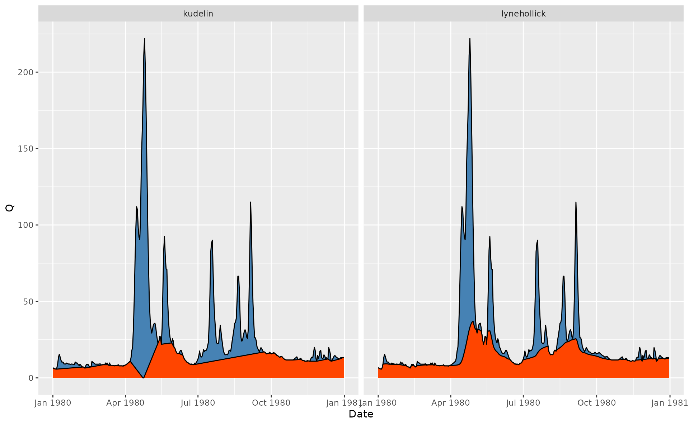

grwat implements several methods for baseflow filtering, including those by Lyne and Hollick (1979), Chapman (1991), Boughton (1993), Jakeman and Hornberger (1993) and Chapman and Maxwell (1996). The get_baseflow() function does the job:
Qbase = gr_baseflow(spas$Q, method = 'lynehollick', a = 0.925, passes = 3)
head(Qbase)
#> [1] 3.698598 3.789843 3.876099 3.958334 4.037031 4.112454Though get_baseflow() needs just a vector of runoff values, it can be applied in a traditional tidyverse pipeline like follows:
# Calculate baseflow using Jakeman approach
hdata = spas %>%
mutate(Qbase = gr_baseflow(Q, method = 'jakeman'))
# Visualize for 2020 year
ggplot(hdata) +
geom_area(aes(Date, Q), fill = 'steelblue', color = 'black') +
geom_area(aes(Date, Qbase), fill = 'orangered', color = 'black') +
scale_x_date(limits = c(ymd(19800101), ymd(19801231)))
#> Warning: Removed 23376 rows containing missing values (position_stack).
#> Removed 23376 rows containing missing values (position_stack).
Different methods can be compared in a similar way:
hdata = spas %>%
mutate(lynehollick = gr_baseflow(Q, method = 'lynehollick', a = 0.9),
boughton = gr_baseflow(Q, method = 'boughton', k = 0.9),
jakeman = gr_baseflow(Q, method = 'jakeman', k = 0.9),
maxwell = gr_baseflow(Q, method = 'maxwell', k = 0.9)) %>%
pivot_longer(lynehollick:maxwell, names_to = 'Method', values_to = 'Qbase')
ggplot(hdata) +
geom_area(aes(Date, Q), fill = 'steelblue', color = 'black') +
geom_area(aes(Date, Qbase), fill = 'orangered', color = 'black') +
scale_x_date(limits = c(ymd(19810101), ymd(19811231))) +
facet_wrap(~Method)
#> Warning: Removed 93508 rows containing missing values (position_stack).
#> Removed 93508 rows containing missing values (position_stack).In case of 100% hydraulic connection between ground waters and river discharge, according to Kudelin (1960) the baseflow is equal to zero level at the point of maximum discharge during the spring flood event. Since extraction of the spring flood requires meteorological data, it cannot be extracted by simple filtering. Instead, you can use the advanced separation method by Rets et al. (2022), which incorporates Kudelin’s approach during the spring flood:
p = gr_get_params('center')
p$filter = 'kudelin'
hdata = spas %>%
mutate(lynehollick = gr_baseflow(Q, method = 'lynehollick',
a = 0.925, passes = 3),
kudelin = gr_separate(spas, p)$Qbase) %>%
pivot_longer(lynehollick:kudelin, names_to = 'Method', values_to = 'Qbase')
#> grwat: data frame is correct
#> grwat: parameters list and types are OK
# Visualize for 1980 year
ggplot(hdata) +
geom_area(aes(Date, Q), fill = 'steelblue', color = 'black') +
geom_area(aes(Date, Qbase), fill = 'orangered', color = 'black') +
scale_x_date(limits = c(ymd(19800101), ymd(19801231))) +
facet_wrap(~Method)
#> Warning: Removed 46752 rows containing missing values (position_stack).
#> Removed 46752 rows containing missing values (position_stack).
References
Boughton, W. C. 1993. “A Hydrograph-Based Model for Estimating Water Yield of Ungauged Catchments.” In Institute of Engineers Australia National Conference, 93/14:317–24.
Chapman, T. G. 1991. “Comment on “Evaluation of Automated Techniques for Base Flow and Recession Analyses” by R. J. Nathan and T. A. McMahon.” Water Resources Research 27 (7): 1783–4.
Chapman, T. G., and A. I. Maxwell. 1996. “Baseflow Separation - Comparison of Numerical Methods with Tracer Experiments.” In Hydrology and Water Resources Symposium, 539–45.
Jakeman, A. J., and G. M. Hornberger. 1993. “How Much Complexity Is Warranted in a Rainfall-Runoff Model?” Water Resources Research 29 (8): 2637–49.
Kudelin, B. I. 1960. Principles for Regional Assessment of Natural Groundwater Resources [in Russian: Принципы региональной оценки естественных ресурсов подземных вод]. Moscow, Russia: Moscow State University.
Lyne, V., and M. Hollick. 1979. “Stochastic Time-Variable Rainfall-Runoff Modeling.” In Australian National Conference Publication, 79:89–92.
Rets, E. P., M. B. Kireeva, T. E. Samsonov, N. N. Ezerova, A. V. Gorbarenko, and N. L. Frolova. 2022. “Algorithm Grwat for Automated Hydrograph Separation by B. I. Kudelin’s Method: Problems and Perspectives.” Water Resources 49 (1): 23–37.